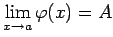
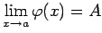

Sätze über Grenzwerte von Funktionen
- 1. Grenzwert einer konstanten Größe:
- Der Grenzwert einer konstanten Größe ist dieser Größe selbst gleich:
- 2. Grenzwert einer Summe oder Differenz:
- Der Grenzwert einer Summe oder Differenz endlich vieler Funktionen ist gleich der Summe bzw. Differenz der entsprechenden Grenzwerte dieser Funktionen, falls die Einzelgrenzwerte existieren:
- 3. Grenzwert eines Produktes:
- Der Grenzwert eines Produktes aus endlich vielen Funktionen ist gleich dem Produkt der Grenzwerte dieser Funktionen, falls die Einzelgrenzwerte existieren:
- 4. Grenzwert eines Quotienten:
- Der Grenzwert des Quotienten zweier Funktionen ist gleich dem Quotienten der Grenzwerte dieser Funktionen:
wenn die Einzelgrenzwerte existieren und ist.
- 5. Einschließung:
- Wenn die Werte einer Funktion f(x) zwischen den Werten zweier anderer Funktionen
 und
und  eingeschlossen sind, wenn also ist, und wenn  sowie gilt, dann ist auch
eingeschlossen sind, wenn also ist, und wenn  sowie gilt, dann ist auch